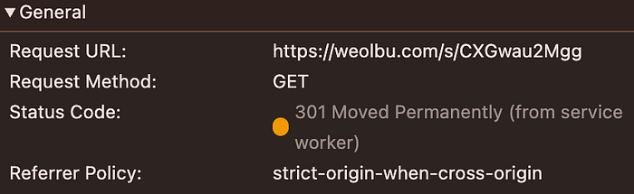
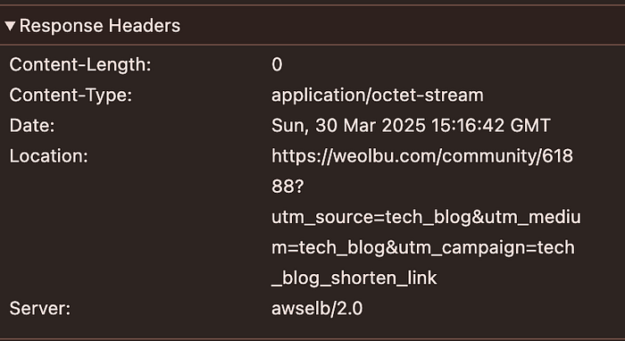
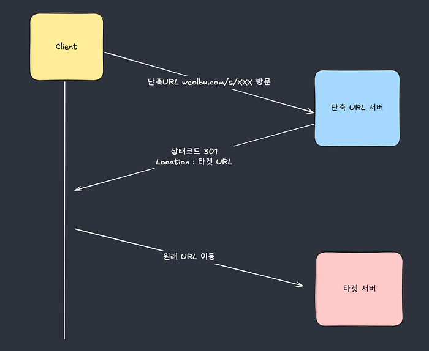
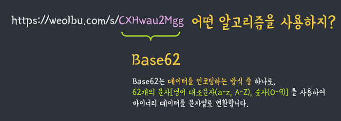
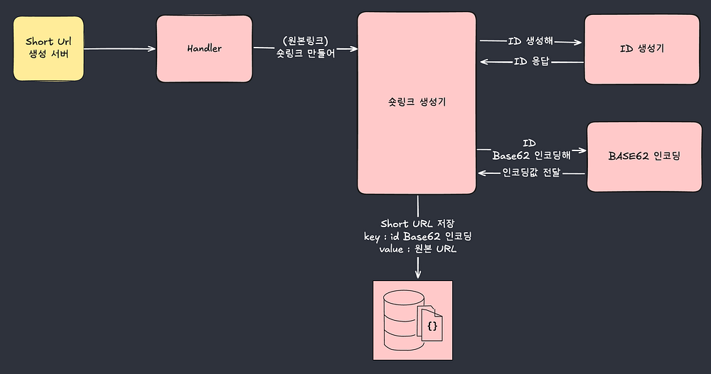
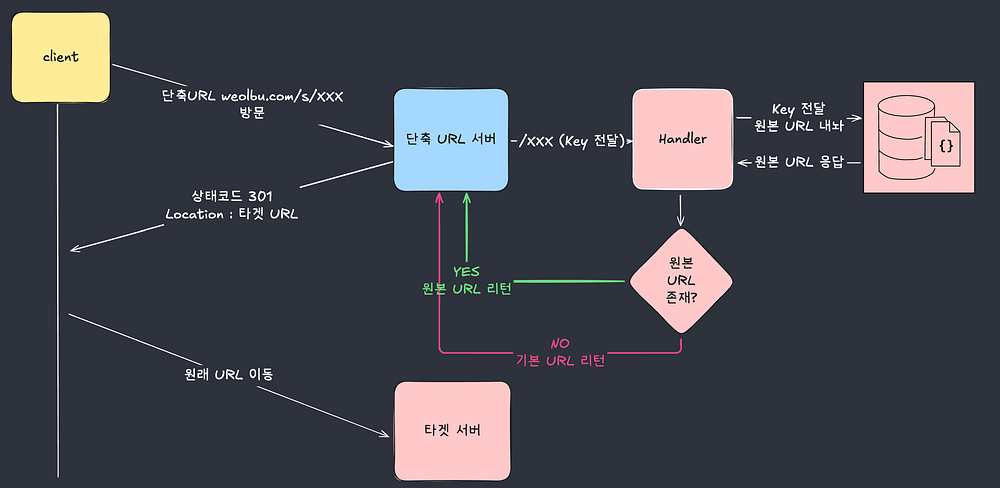
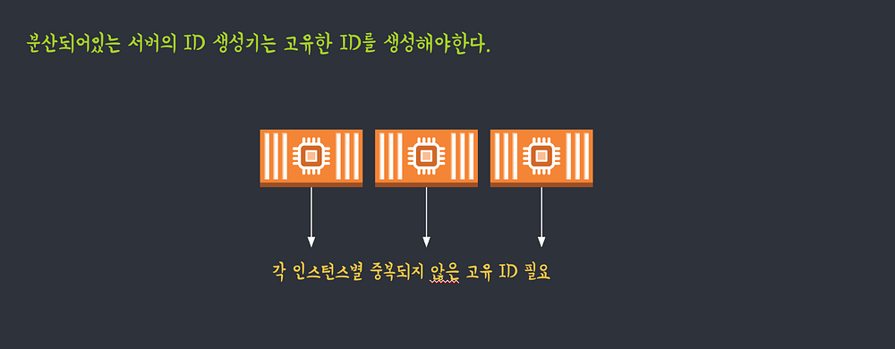

단축 URL과 Snowflake id 구현
*파트너스 활동을 통해 일정액의 수수료를 제공받을 수 있음
저는 백엔드 개발을 담당하며, 비즈니스 요구사항을 기술적으로 풀어내는 문제 해결에 집중하고 있습니다.
이번 글에서는 최근 경험한 단축 URL 시스템 구축 사례를 중심으로, 분산 환경에서의 ID 문제 해결, 아키텍처 설계, 그리고 실무 적용까지의 과정을 소개합니다.
이 글이 비슷한 고민을 하고 있는 개발자분들께 실질적인 인사이트로 다가가길 바랍니다.
url 압축중..
목차
- 개요
- 단축 URL (Shorten URL)이란?
- 단축 URL은 어떻게 동작할까?
- 트러블 슈팅 — 분산환경, ECS 환경에 직면한 문제
- Shorten URL 처리 아키텍처 정리
- 마무리 하면서
개요
**단축 URL(Short Link)**이라고 하면 많은 분들이 자연스럽게 Bitly와 같은 외부 서비스를 떠올릴 겁니다. 제가 있던 월부에서도 Bitly를 잘 활용해 왔죠.
하지만 점점 늘어나는 메시지 개인화 수요, 실시간 마케팅, 그리고 수천 건 단위의 링크를 한 번에 생성해야 하는 환경에서는 외부 서비스만으로는 한계가 분명해졌습니다.
특히, 외부 단축 URL 서비스는 링크를 생성할 때마다 네트워크 통신이 발생하기 때문에, 속도와 비용, 그리고 커스터마이징 기능 측면에서 우리가 원하는 수준을 만족시키기 어려웠습니다.
최근에는 실시간 또는 대량의 커스터마이징 링크를 기반으로 CRM 메시지를 발송하거나 외부용 링크를 동적으로 생성해야 하는 요구사항이 많아졌고, 이는 자연스럽게 분산 서버 환경과 배치성 업무를 기반으로 대규모 단축 URL을 빠르게 처리해야 하는 기술적 과제로 이어졌습니다.
결국, 이런 니즈를 저비용·고효율로 해결하기 위해, 우리는 자체 단축 URL 서비스를 직접 구축하기로 결정하게 되었습니다.
이 글에서는 우리가 왜 자체 단축 URL을 만들게 되었는지, 어떤 기술적 도전과 마주했는지, 그리고** 그 문제를 어떤 방식으로 해결했는지를 자세히 소개합니다. Snowflake 기반의 고유 ID 설계**, AWS ECS 환경에서의 worker ID 할당, Base62 인코딩 등 다양한 기술 요소를 아키텍처와 함께 공유합니다.
월부의 기술 문화에 관심이 있으신 분들, 혹은 비슷한 고민을 하고 계신 분들께 이 글이 인사이트와 영감을 드릴 수 있기를 바랍니다.
단축 URL (Shorten URL)이란?
배경
단축 URL이란 긴 형태의 URL(Uniform Resource Locator)을 간략하게 축약하여 사용하는 짧은 형태의 링크를 말합니다. 일반적으로 웹 주소가 길면 사용자가 공유하거나 기억하기 어려운 문제가 생기기 때문에, 이를 짧게 만들어 간편하게 공유하고 효율적으로 관리할 수 있도록 돕습니다.
대표적인 단축 URL 서비스로는 Bitly, TinyURL, 구글의 goo.gl 등이 있으며, 월부는 Bitly를 이용하여 단축 URL을 만들어왔습니다.
단축 URL을 왜 사용할까?
보통 단축 URL은 주로 마케팅과 데이터 분석 목적으로 사용됩니다. 특히 데이터 분석을 위한 링크는 UTM 파라미터 등을 추가하여 길어지는 경우가 많습니다. (UTM은 마케팅 성과 분석을 위한 URL 태그로, 이번 글의 주제와 직접 관련이 없으므로 자세한 설명은 생략합니다.)
이렇게 길어진 링크는 사용자 입장에서 보기 어렵고 공유하기 불편합니다. 이를 해결하기 위해 긴 링크를 짧고 간편한 형태로 축약한 단축 URL을 사용하게 됩니다.
아래는 월부 단축 URL을 활용해 만든 실제 링크 예시입니다.
(제가 좋아하는 글.. ㅎㅎ)
- 원본 링크 (길다 길어…)
https://weolbu.com/community/61888?utm_source=tech_blog&utm_medium=tech_blog&utm_campaign=tech_blog_shorten_link - 단축 URL로 축약한 링크 (어메이징 하지 않나요?ㅎㅎ)
https://weolbu.com/s/CXHwau2Mgg
단축 URL은 어떻게 동작할까?
단축 URL을 클릭하면 어떻게 동작할까?
HTTP 상태 코드 301
HTTP 상태 코드 301
응답 헤더 위치 정보
응답 헤더 위치 정보
- 링크를 클릭하면 301 Moved Permanently라는 Status Code를 먼저 응답받습니다.
- Response Header의 Location을 보면 원본 링크에 대한 정보를 읽을 수 있습니다.
이 정보를 통해 알 수 있는 것은 링크를 클릭했을 때 단축링크를 확인하는 서버가 있고, 그 서버는 실제로 이동해야 할 정보에 대해서 알려준다는 것을 알 수 있습니다.
위의 흐름을 아래의 Flow로 간단하게 정리할 수 있습니다.
URL 클릭 흐름 단축
URL 클릭 흐름 단축
단축 URL 알고리즘
이 글을 읽는 여러분에게 질문을 해보겠습니다.
‘나’라면 아래의 긴 링크를 어떻게 줄일 수 있을까요?
대부분 사람들은 ‘단축’이라는 단어 때문에 링크를 실제로 압축하여 줄인다고 생각합니다. 어떤 마법 같은 특별한 압축 알고리즘이 존재할 것이라 생각하지만, 실제로 URL을 압축하는 방식은 효율적이지 않습니다.
왜냐하면 URL 자체를 압축하면 실제 크기 감소 효과가 미미하며, 압축된 형태가 항상 고유하다고 보장하기도 어렵습니다. 따라서 단축 URL은 URL 압축이 아니라, 원본 URL과 매핑되는 고유한 짧은 키(key)를 생성하여 간략한 링크를 만들어 사용합니다.
Base62 알고리즘
Base62 알고리즘
Base62 알고리즘을 선택한 이유는 명확하고 단순합니다. 숫자(0–9), 대문자(A-Z), 소문자(a-z)를 조합해 총 62개의 문자 집합을 사용할 수 있기 때문에, 짧은 문자열로도 많은 수의 조합을 만들어낼 수 있는 효율적인 인코딩 방식입니다.
우리는 단축 URL의 키(key)를 웹 주소로 직접 사용해야 하므로, URL-safe하고, 사람이 읽기 쉬우며, 길이도 짧은 인코딩 방식이 필요했습니다. 이 조건에 가장 적합한 방식이 바로 Base62였으며 통상적으로 사용하는 방식이기도 합니다.
긴 링크는 바로 Base62 알고리즘으로 Key를 생성한 후 Value에는 원본 링크를 저장하는 방식으로 구현을 합니다.
자 그러면 왜 원본 URL을 압축하는 것보다 Base62 알고리즘을 활용하였을 때 압도적으로 좋은 효율을 낼 수 있는지 알 수 있겠죠?
- Key : Base62로 인코딩된 ID
- Value : 원본 URL
단축 URL을 생성하는 서버
자 그러면 간단하게 단축 URL을 생성하는 요청이 들어왔을 때 어떤 흐름으로 URL이 생성되는지 확인해 보도록 하겠습니다.
Shorten URL Generate Server
Shorten URL Generate Server
- 원본 URL을 단축 URL로 생성하라는 요청을 한다.
- 숏링크 생성기는 고유한 ID를 만들어낸다.
- 고유한 ID는 Base62 알고리즘으로 인코딩한다.
- Data 저장소는 Key와 Value형식으로 URL을 저장한다.Key : Base62로 인코딩한 IDValue : 원본링크
그림으로 보니 생각보다 어렵지 않은 구조로 풀어낼 수 있습니다.
그러면 이 링크를 해석하는 과정도 유추할 수 있겠죠?
단축 URL 요청을 처리하는 서버
Shorten URL Resolver
Shorten URL Resolver
- /s/{key} 패턴을 해석
- Data 저장소에 {key}가 있는지 확인
- 있다면 원본링크를 301 Redirection
- 없다면 기본링크(home)를 301 Redirection
위의 흐름 외에도 서비스별로 고려야 할 것들이 있습니다.
각 서비스의 사정에 맞게 설정을 하시면 될 것 같습니다.
- 숏링크 유효상태, 유효기간 관리
- 타깃링크 없을 때 기본링크 정책
트러블 슈팅 — 분산환경, ECS 환경에 직면한 문제
트러블 슈팅 1 (분산환경의 고유 ID 생성)
이때까지만 해도 순조롭게 해결할 것이라고 생각했는데 문제가 발생했습니다.
Image 8
?!
ID생성 책임을 애플리케이션에게 위임했는데 우리 백엔드 서버는 분산서버로 여러 대의 인스턴스가 실행되고 있습니다.
문제는 ‘분산 서버 환경에서 절대 겹치지 않는 고유 ID’를 어떻게 생성할 것인가였습니다.
이 부분에 대해서 몇 가지 대안이 있을 수 있습니다.
- ID생성 책임을 Redis를 활용하면 되지 않은가?
- RDB의 Sequence, AutoIncrement ID를 사용하면 되는 거 아닌가?
일단 1번에 대해서는 Redis에 의존하는 관계를 만드는 순간 종속이 되고 장애나 지연과 같은 상황이 발생하였을 때 모든 인스턴스가 영향을 받아 제외했습니다.
그리고, 이번 개발에서는 Document DB를 사용하기 때문에 고유의 채번으로 이루어진 숫자ID를 얻는데에는 한계가 있었습니다.
서버 고유ID를 생성기가 있다면 DB에 종속되지 않고 여러곳에 사용할 수 있는 장점이 있습니다.
이 문제의 해결은 바로 Snowflake ID 생성 알고리즘을 사용하는 것입니다.
고유 ID 필요
분산환경의 고유 ID : Snowflake ID 생성 알고리즘으로 해결하다.
❄️ Snowflake ID란?
twitter snowflke ID는 트위터가 개발한 64비트(Long의 비트수와 일치) 고유 ID 생성 방식으로, 분산 시스템에서도 중복되지 않는 순차적인 ID를 생성하는 것이 핵심이다.
- 글로벌 고유 ID 제공
- 높은 성능 (분산 환경에서 독립적 ID 생성 가능)
- 시간 순 정렬(검색 및 정렬에 유리)